| Activity Plan | Action | Lead | Planned End Date |
|---|---|---|---|
| Ice seals (AP 346) | Respond to AKRO review comments (A715) | Boveng | 2023-12-07 |
| Harbor seals (AP 342) | Circulate revised outline/draft to primary co-authors (A67) | Boveng | 2023-12-07 |
| Ice seals (AP 346) | CHESS paper submitted (A164) | Boveng | 2024-01-05 |
| Harbor seals (AP 342) | Write brief discussion section (A709) | Boveng | 2024-01-10 |
| Ice seals (AP 346) | Initiate Development: Set meetings, Convert 5yr ringed seal review Google Doc to template for bearded seal Template (A625) | Cameron | 2024-01-31 |
| Harbor seals (AP 342) | Submit final report to the Navy (A746) | Christman | 2024-01-15 |
| Toolbox (AP 354) | Analyze beard seal abundance using close-kin mark-recapture (A205) | Conn | 2024-01-15 |
| Toolbox (AP 354) | Submit complete workplan to S&T (A559) | Conn | 2024-01-30 |
| Toolbox (AP 354) | Analysis of bearded seal “at sea” distributions completed (A211) | Conn | 2024-01-30 |
| Ice seals (AP 346) | CKMR paper submitted (A167) | Conn | 2024-02-01 |
| USPAI (AP 355) | Draft and present USPAI poster at the AMSS 2024 (A663) | Dahle | 2024-01-31 |
| Harbor seals (AP 342) | Write glacial survey methods section (A705) | Jansen | 2024-01-05 |
| Harbor seals (AP 342) | AMSS oral presentation (A682) | Jansen | 2024-01-30 |
| Harbor seals (AP 342) | Submit 2025 APASS request (A620) | London | 2024-01-19 |
| Other (AP 999) | OSI: budgeting for Aerial (PRD) compoents (A541) | Moreland | 2023-12-30 |
| Ice seals (AP 346) | Data extracted from multispectral imagery of polar bears, surrounding ice/snow, ambient environmental data (A110) | Moreland | 2024-01-30 |
| USPAI (AP 355) | Software testing/updates (A568) | Moreland | 2024-02-12 |
| Harbor seals (AP 342) | Prepare summary of 2023 field effort (A599) | Richmond | 2024-01-31 |
| Harbor seals (AP 342) | Calculate estimates of abundance and trend by stock; provide results to co-authors (A420) | VerHoef | 2023-12-13 |
| Harbor seals (AP 342) | Write analytical methods section (A707) | VerHoef | 2024-01-05 |
| Ice seals (AP 346) | Generate list of candidate references: targeted search of MML-PEP library and NAMMCO Lit review (A626) | Walcott | 2024-01-26 |
| Diet and physiology (AP 350) | Obtain serology results from Belfast lab (A178) | Ziel | 2024-01-31 |
| Diet and physiology (AP 350) | Follow up with Aimee about genetic results for samples analyzed (A587) | Ziel | 2024-01-31 |
PEP Scheduling Report
This report was generated on 2024-02-13.
Introduction
The information in this report represents the outstanding and upcoming work for PEP staff over the next 180 days. The intent of this information is to help support cross-project planning and communication.
Overdue Work
The following table lists the actions that are overdue in the DB.
Planned Work by Action Lead
For actions where there is no start date assigned, an anticipated start date of 60 days before the planned end date has been estimated. Today’s date is shown as a grey vertical line on the figure.
Boveng

Brady

Cameron

Christman

Conn

Dahle
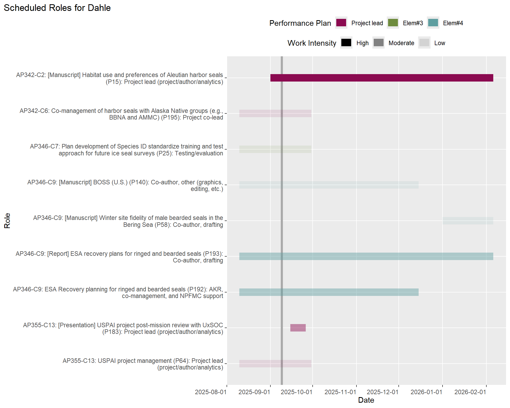
Jansen

Koslovsky

Lindsay

London

McClintock

Moreland

Richmond

VerHoef

Walcott
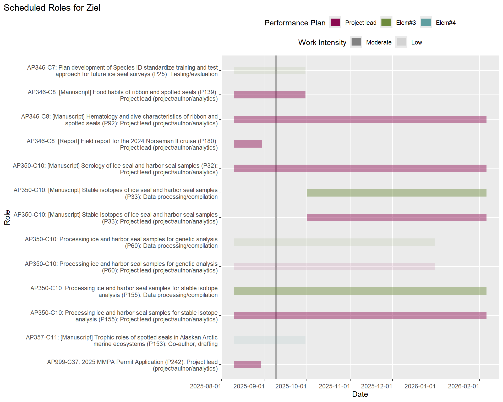
Ziel

Planned Work by Project
For actions where there is no start date assigned, an anticipated start date of 60 days before the planned end date has been estimated. Today’s date is shown as a grey vertical line on the figure.
Diet and physiology (AP 350)
Collaborate with partners on analyses of samples collected in the field (C10)


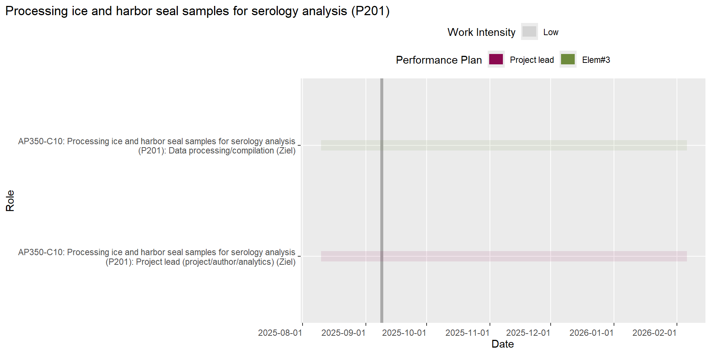

Harbor seals (AP 342)
Abundance and trend analysis for harbor seal stocks (C3)


Aerial surveys of harbor seals in Alaska (C1)

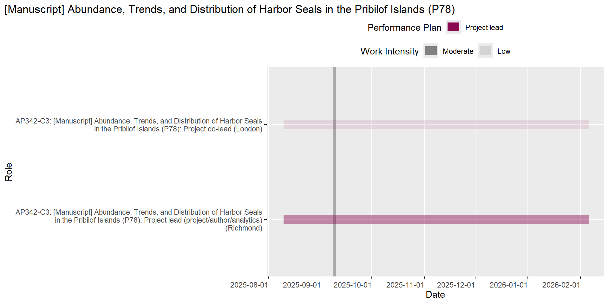


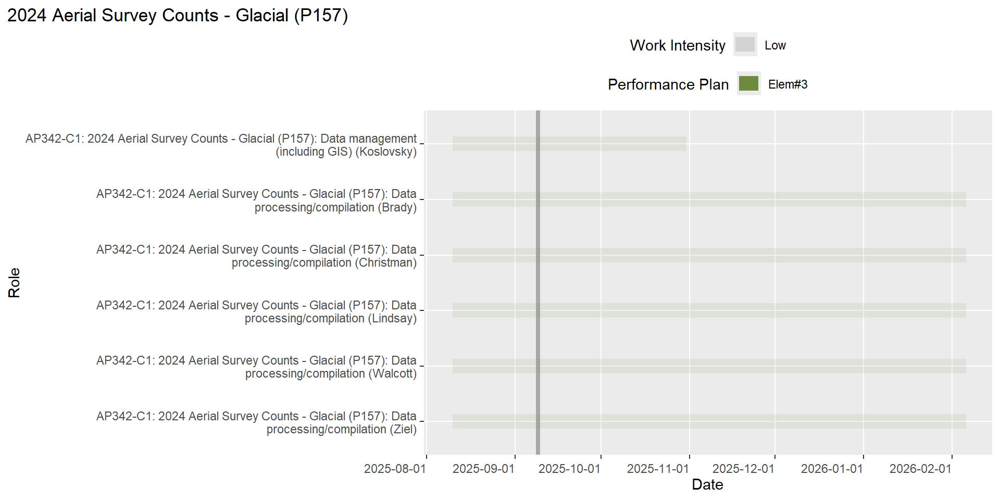
Aleutian Islands harbor seal ecology (C2)


Harbor seal reporting (C17)


Scientific assessment and support to stakeholders for management and co-management of Alaskan harbor seals (C6)


Vessel disturbance of glacial harbor seals (C5)


Ice seals (AP 346)
Aerial surveys of ice seals and polar bears (C7)


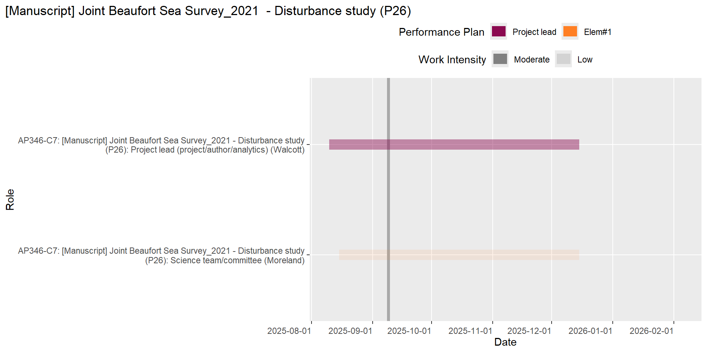
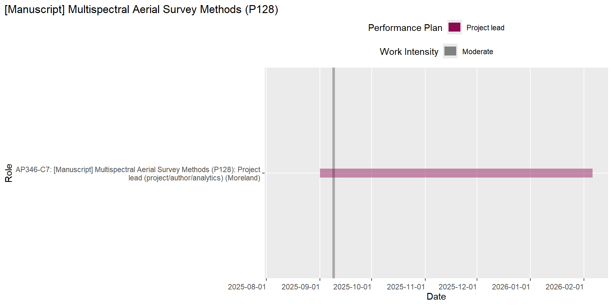
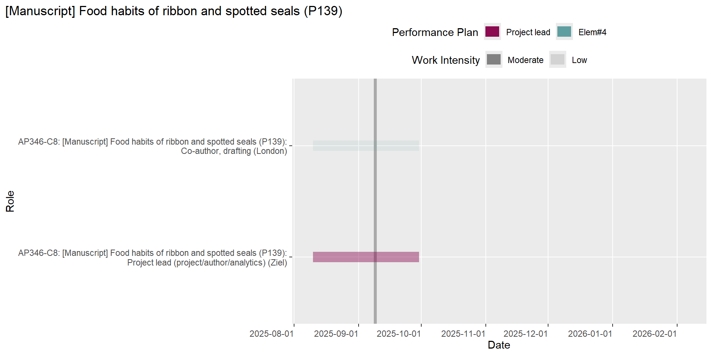

Scientific assessment and support to stakeholders for management and co-management of Alaskan ice seals (C9)


Vessel-based tagging and sampling for haul-out, health, condition, diet (C8)


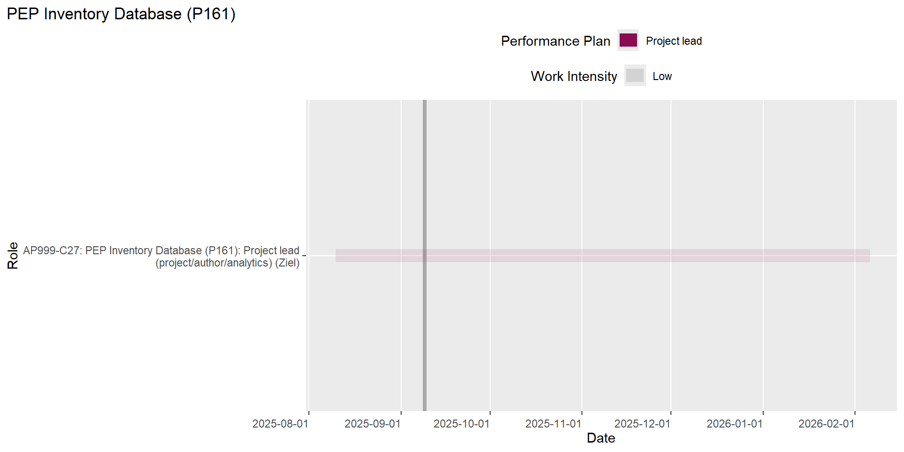
Other (AP 999)
Modernizing MML stock assessment workflows (C26)

Open science/software (C25)


Optics Strategic Initiative (C23)

Program data management (C15)
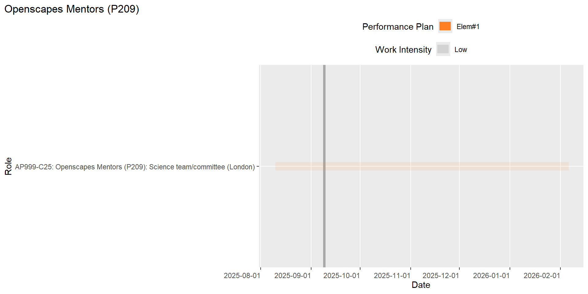


Walcott work for AEP (C22)

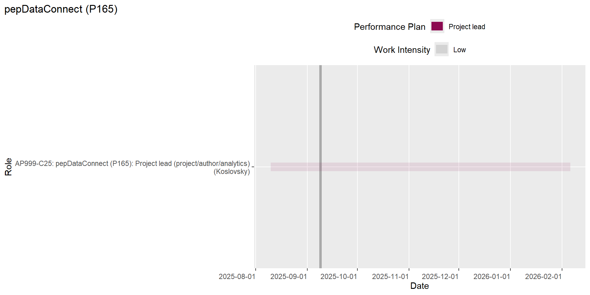
Toolbox (AP 354)
Integrating diverse data sources to determine seasonal density distributions of protected species (C12)


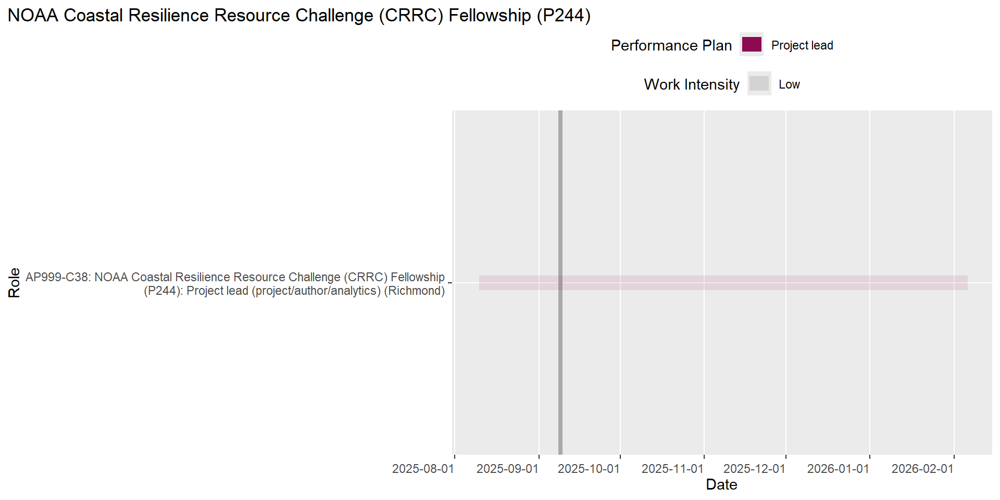

Trophic roles (AP 357)
Analysis for Trophic Roles of Ice Seals RWP project (C11)

Integrating seal energy requirements and diet composition (C21)
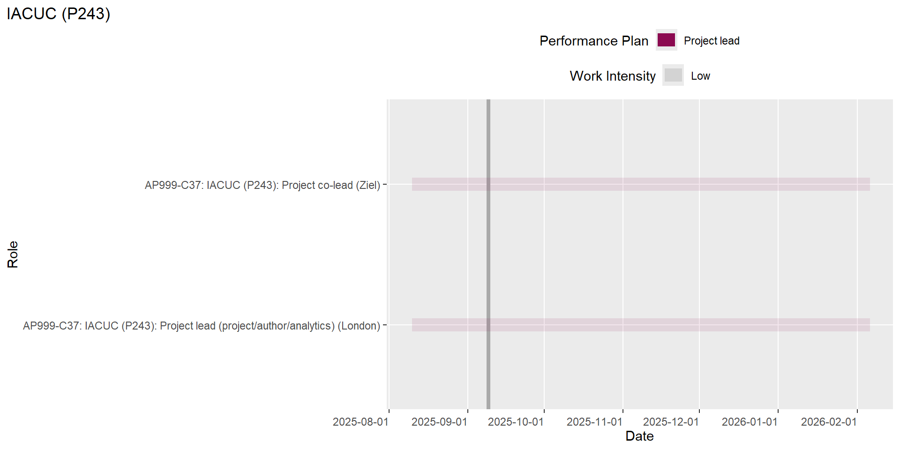

UAS body condition (AP 356)
Phase III: UAS field tests/data collection and analysis/reporting (C14)
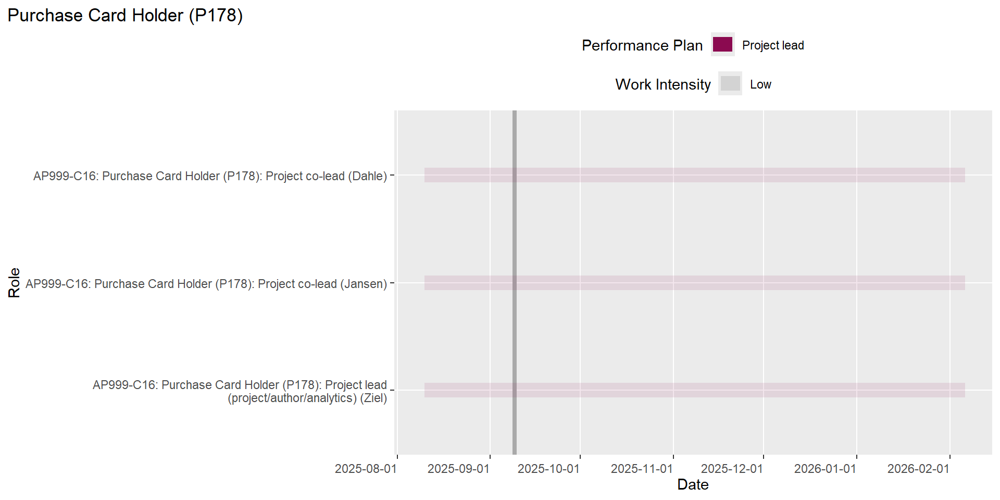


USPAI (AP 355)
Uncrewed Surveys of Pinnipeds in the Aleutian Islands (C13)


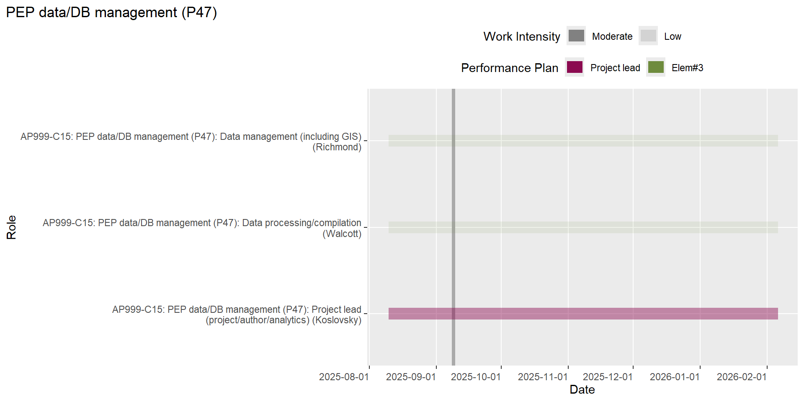
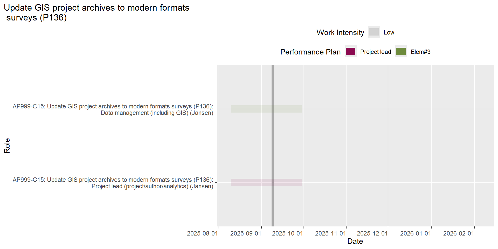